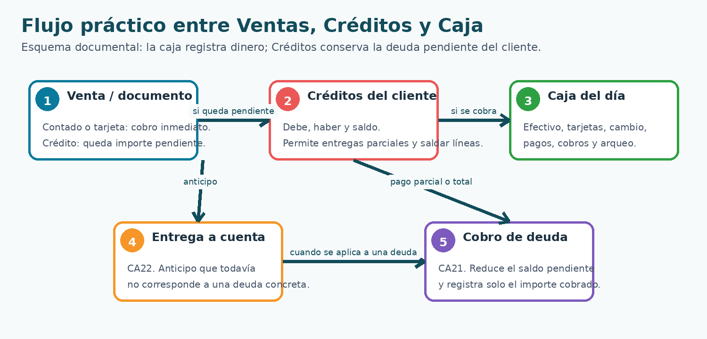
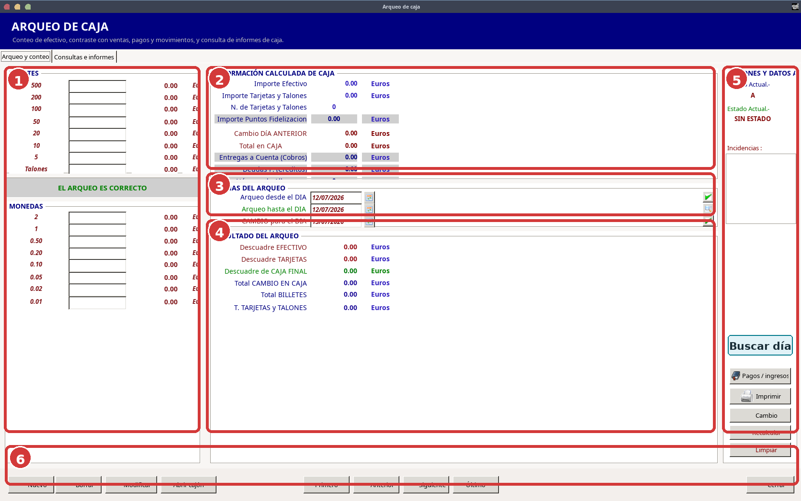
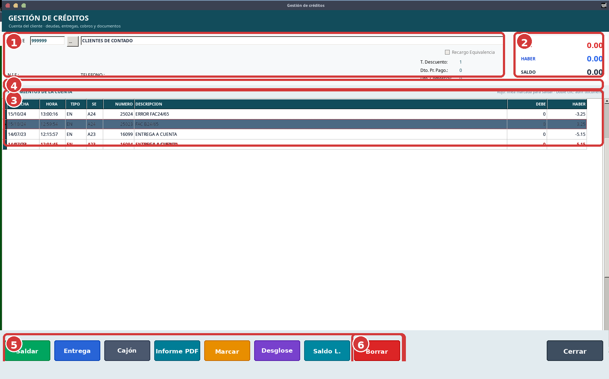
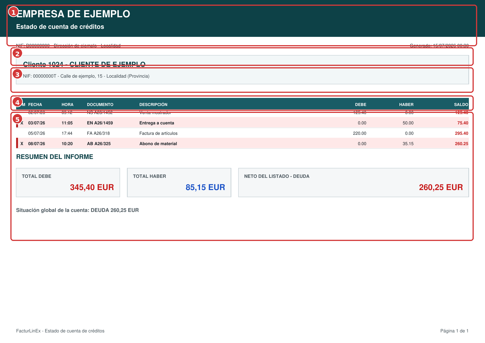
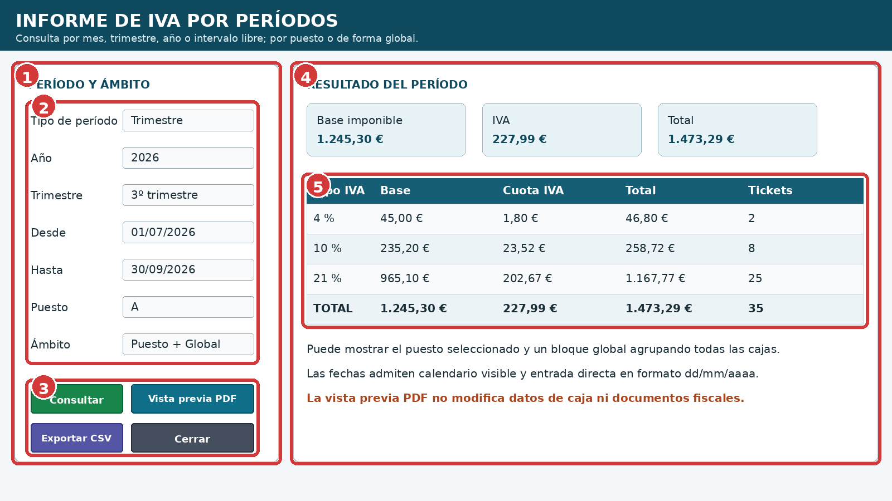
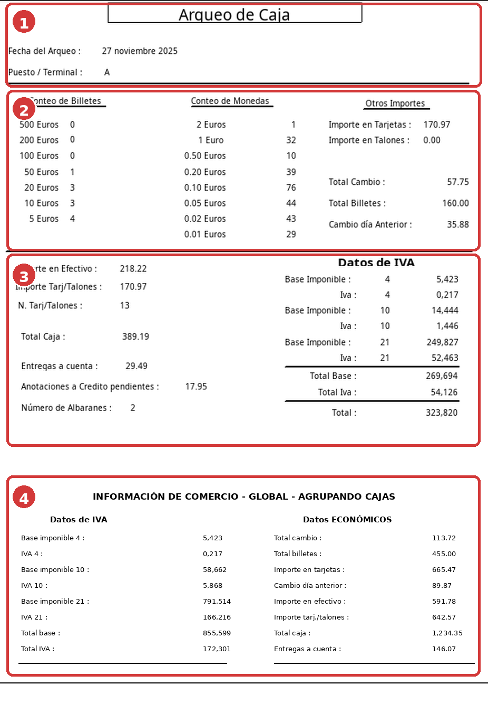

Caja, cobros y créditos
Primera edición 1.0 FINAL · Manual completo y auditado
6.1 Relación entre Ventas, Créditos y Caja #
Caja registra el movimiento real de dinero. Créditos conserva lo que el cliente debe o ha entregado. Una venta cobrada al contado o con tarjeta se refleja directamente en Caja; una venta a crédito crea deuda pendiente y solo el importe efectivamente cobrado debe incorporarse después a Caja.

| N.º | Elemento | Interpretación |
|---|---|---|
| 1 | Venta o documento | Cobro inmediato o deuda pendiente. |
| 2 | Créditos | Debe, Haber y Saldo del cliente. |
| 3 | Caja | Dinero realmente recibido o entregado. |
| 4 | Entrega a cuenta | Anticipo aún no aplicado a deuda concreta. |
| 5 | Cobro de deuda | Reduce el saldo por el importe cobrado. |
6.2 Pantalla de arqueo de caja #

| N.º | Zona | Uso principal |
|---|---|---|
| 1 | Conteo | Billetes, monedas, talones y estado del arqueo. |
| 2 | Información calculada | Efectivo, tarjetas, cambio, entregas y deudas. |
| 3 | Fechas | Día inicial, final y cambio siguiente. |
| 4 | Resultado | Descuadres, caja final y totales. |
| 5 | Acciones e incidencias | Puesto, Buscar día, pagos/ingresos, impresión y recálculo. |
| 6 | Navegación | Alta, modificación, cajón y desplazamiento. |
- Compruebe puesto y fechas.
- Introduzca el conteo físico.
- Revise efectivo, tarjetas, cambio, entregas y deudas.
- Confirme descuadre cero o documente la diferencia.
- Guarde y genere el informe.
6.3 Buscar una caja anterior y reimprimirla #
Buscar día solicita una fecha mediante calendario, localiza la caja del puesto y carga sus datos. Después puede usarse Imprimir para obtener de nuevo el arqueo sin alterar los movimientos originales.
6.4 Pagos, ingresos, cambio y retiradas #
Pagos/ingresos admite entradas y salidas reales, pagos a proveedores en metálico, aportaciones de cambio y retiradas. No debe bloquearse de forma general el uso de importes negativos: el signo debe revisarse junto con la categoría.
| Campo | Efecto habitual | Uso |
|---|---|---|
| CA16 | Suma | Saldo inicial. |
| CA17 | Suma | Incremento o cambio. |
| CA18 | Resta | Retirada o fondos. |
| CA19 | Resta | Pago en efectivo; el pago a proveedor se introduce normalmente positivo. |
| CA20 | Información | Deudas generadas. |
| CA21 | Suma | Cobro de deudas. |
| CA22 | Suma | Entregas a cuenta. |
6.5 Gestión de créditos del cliente #

| N.º | Zona | Uso |
|---|---|---|
| 1 | Cliente | Código, búsqueda, nombre, NIF, teléfono y condiciones. |
| 2 | Totales | Debe, Haber y Saldo destacados. |
| 3 | Movimientos | Fecha, tipo, serie, número, descripción, Debe y Haber. |
| 4 | Leyenda | Línea roja para saldar; doble clic abre el documento. |
| 5 | Acciones | Saldar, Entrega, Cajón, Informe PDF, Marcar, Desglose y Saldo líneas. |
| 6 | Borrar | Elimina la línea seleccionada tras comprobación y confirmación. |
El doble clic recupera la entrega, ticket, albarán o factura según el tipo de línea, permitiendo verificar el origen antes de cobrar, marcar o borrar.
6.6 Marcar, saldar, entregar y borrar #
| Acción | Qué hace | Precaución |
|---|---|---|
| Marcar | Selecciona líneas para operaciones selectivas. | Revise visualmente las marcas. |
| Saldar | Registra el pago de todas, marcadas o no marcadas. | Puede ser parcial. |
| Entrega | Registra una entrega a cuenta. | No confundir con cobro de deuda. |
| Informe PDF | Genera el estado de cuenta. | Revise cliente, movimientos y saldo. |
| Saldo líneas | Calcula el saldo seleccionado. | Respeta Debe, Haber y marcas. |
| Borrar | Elimina la línea seleccionada. | Compruebe histórico y documento origen. |
6.7 Pagos parciales y actualización de Caja #
- Seleccione el cliente y revise el saldo.
- Marque líneas o elija Todas / Marcadas / Sin marcar.
- Introduzca el importe realmente entregado.
- Elija la forma de pago.
- Confirme y revise el saldo restante.
- Compruebe que Caja registra solo lo cobrado.
6.8 Albaranes, facturas e histórico #
El albarán se identifica por serie y número; el puesto no forma parte de su identidad. Puede editarse desde otro puesto y debe actualizar el mismo albarán, crédito e histórico. Los cobros de albarán o factura siguen siendo independientes.
- Si el crédito existe, actualizar el importe y conservar trazabilidad.
- Si el documento es nuevo sin crédito, preguntar antes de añadirlo.
- Si es anterior sin crédito, preguntar antes de añadir solo la diferencia.
- Si vuelve al importe original, retirar el ajuste cuando proceda.
- Un albarán histórico no debe pedir datos de ticket inexistentes.
- Una vez facturado, no debe repercutir otra vez en Créditos.
6.9 Estado de cuenta e informe PDF #

| N.º | Zona | Comprobación |
|---|---|---|
| 1 | Empresa y título | Emisor del estado de cuenta. |
| 2 | Datos de emisión | NIF, dirección y fecha/hora. |
| 3 | Cliente | Código, nombre, NIF y domicilio. |
| 4 | Cabecera | Fecha, documento, Debe, Haber y Saldo. |
| 5 | Movimientos y resumen | Saldo acumulado, totales y deuda neta. |
6.10 Informe de IVA por períodos #

| N.º | Zona | Uso |
|---|---|---|
| 1 | Período y ámbito | Mes, trimestre, año o intervalo; puesto o global. |
| 2 | Parámetros | Año, fechas, trimestre, puesto y ámbito. |
| 3 | Acciones | Consultar, PDF, exportar y cerrar. |
| 4 | Resumen | Base, IVA y total. |
| 5 | Desglose | Tipos, bases, cuotas, totales y tickets. |

| N.º | Zona | Contenido |
|---|---|---|
| 1 | Identificación | Fecha y puesto. |
| 2 | Conteo | Billetes, monedas, tarjetas y cambio. |
| 3 | Caja local e IVA | Efectivo, deuda, entregas y desglose. |
| 4 | Global | IVA y datos económicos agrupados. |
6.11 Errores frecuentes #
| Síntoma | Comprobación |
|---|---|
| No se borra un crédito | Seleccione una línea, revise permisos y confirme. |
| Pide serie/número al abonar albarán | No tratar el albarán como ticket. |
| Pago parcial salda todo | Revisar importe entregado y Caja. |
| Caja descuadrada | Distinguir cobro, entrega, retirada, pago e incremento. |
| Pago a proveedor aumenta Caja | La categoría de pago ya resta el importe positivo. |
| Negativo confuso | Mostrar signo y revisar categoría. |
| No localiza caja antigua | Usar Buscar día con fecha y puesto correctos. |
| Totales poco legibles | Revisar versión modernizada y contraste. |
6.12 Lista de comprobación #
- Puesto y fecha correctos.
- Billetes y monedas contados.
- Cambio anterior y siguiente revisados.
- Movimientos clasificados correctamente.
- Créditos con documento origen y saldo coherentes.
- Pagos parciales conservan pendiente.
- Debe, Haber y Saldo coinciden.
- Albaranes por serie y número.
- Borrados confirmados y con histórico revisado.
- PDF e IVA comprobados.
- Cuadros, números y leyendas coinciden.